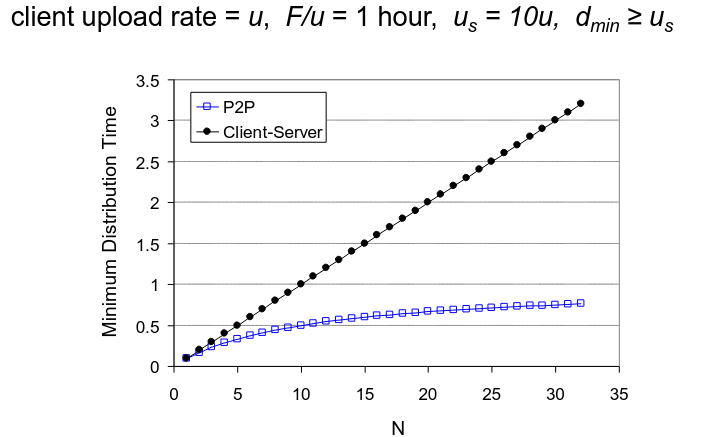
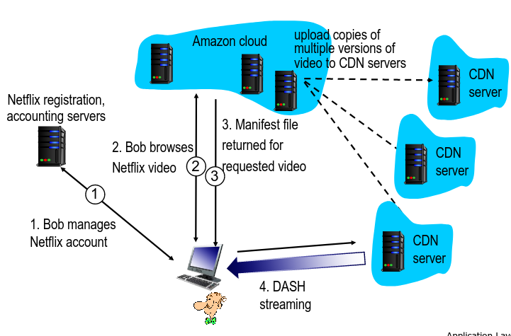
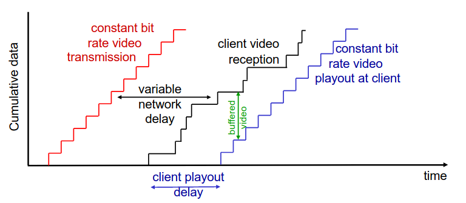
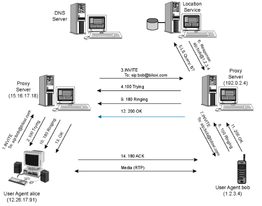
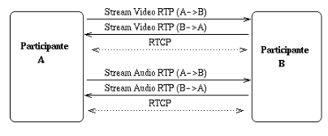

Introdução
Avaliação
- Teste (50%)
- Mínimo de 8 valores;
- Trabalhos Práticos (50%)
- 2 trabalhos para realizar maioritariamente nas aulas;
- Grupos de 3 elementos;
- Mínimo de 10 valores.
As aulas práticas têm presenças obrigatórias (\( \frac{2}{3} \) das aulas).
Faltas injustificadas às aulas PL descontam 0.5 valores.
Existe um controlo de faltas nas teóricas, no entanto, este não tem um efeito direito nas notas (só para dar aquela décima extra)
Material
- Livro do Kurose;
- Slides das aulas teóricas.
Camada Aplicacional
Camada Aplicacional
- Apesar da rede da Internet ter sido criada para a simples troca de documentos, hoje em dia, as aplicações presentes na Internet são de todos os tipos, podendo gerar uma quantidade de tráfego muito distinta entre elas.
- No entanto, a criação de uma app deve ser feita com a preocupação "exclusiva" que esta seja capaz de correr nos end systems, ignorando por completo os passos intermédios da app na rede.
End-to-End Principle
Quem desenvolve aplicações não tem de se preocupar com a rede e quem trata da rede não tem de se preocupar com as apps.
NOTA:
Hoje em dia, este processo não é bem estrito...
No fundo, tem de existir um pouco de preocupação mútua em ambos os lados da moeda...
Por exemplo, as operadoras de rede analisam o tráfego dos seus clientes, enquanto que os devs têm de ter conhecimento acerca dos protocolos de transporte disponíveis na rede.
Arquitetura de Aplicações
Em rede, as aplicações podem possuir diferentes arquiteturas. Por exemplo:
- Client-Server;
- Peer-to-Peer (P2P).
Arquitetura Client-Server
Servidor:
- Sempre online;
- Endereço de IP permanente;
- Utiliza data centers para permitir a escalabilidade.
Clientes:
- Comunicam com o servidor;
- Podem conectar e desconectar-se à vontade;
- Podem ter endereços de IP dinâmicos;
- Não comunicam diretamente entre si.
Arquitetura P2P
- Não têm um servidor sempre online;
- Os end-systems comunicam diretamente entre si;
- Um peer fornece/consome serviços a/de outros peers;
- Auto-escalável: novos peers fornecem novos serviços e trazem novos pedidos;
- Um peer é, simultaneamente, cliente e servidor.
- Tem processos tanto de cliente, como de servidor.
- Peers podem (des)conectar-se à vontade e trocam de endereços IP.
- Isto causa uma gestão complexa.
Comunicação de Processos
Um processo é um programa que se encontra a correr num dado host. Processos em hosts diferentes comunicam através da troca de mensagens.
Processo do Cliente: processo que inicia a comunicação.
Processo do Servidor: processo que espera até ser contactado.
Sockets
Os processos enviam e recebem mensagens através dos seus sockets que são análogos a uma porta.
Endereçamento de Processos
- De forma a receber mensagens, um processo deverá conter um ID.
- O ID inclui tanto o endereço IP como o número da porta associada ao processo no host.
\[ IPv4/IPv6 + Porta \]
- Porta do
HTTP Server: 80; - Porta do
Mail Server: 25.
Protocolo da Camada Aplicacional
Define:
- Tipo das mensagens trocadas;
- Syntax das mensagens;
- Semântica das mensagens;
- Regras relativas ao quando e como os processos devem receber/responder às mensagens.
Como decidir qual o serviço de transporte a utilizar?
Depende dos requisitos da aplicação em questão, devendo ter os seguintes fatores em conta:
- Integridade dos dados;
- A app é capaz de tolerar faltas?
- Timing;
- Podemos ter delay?
- Largura de Banda;
- Há um valor mínimo necessário?
- Segurança;
- Precisa-se de assegurar encriptação, integridade, etc...?
De notar que apesar da maioria dos sistemas terem mais do que uma interface ativa, o TCP só tira partido de 1, pelo que apps mais recentes tendem a seguir outros protocolos de comunicação.


Segurança em TCP
De forma a providenciar segurança em TCP., deve-se correr o TLS (Transport Layer Security) que irá encriptar as conexões, providenciar integridade de dados e fornecer um sistema com autenticação end-to-end.
Tempo de Distribuição de Ficheiros
Pretendemos comparar as diferentes arquiteturas, tendo por base o tempo necessário para distribuir um ficheiro \( F \) por \( N \) clientes.
Devemos efetuar o estudo com base nos piores casos disponíveis:
Client-Server
- Transmissão do Servidor: deverá enviar de forma sequencial \( N \) cópias do ficheiro.
- Tempo para enviar 1 cópia: \( \frac{F}{u_{s}} \);
- Tempo para enviar \( N \) cópias: \( \frac{NF}{u_{s}} \).
- Cliente: Cada cliente deve fazer download de uma cópia do ficheiro.
- \( d_{min} \): menor taxa de download dos clientes;
- Tempo: \( \frac{F}{d_{min}} \)
\[ D_{c-s} \geq max{\frac{NF}{u_s}, \frac{F}{d_{min}}} \]
Ou seja, aumenta linearmente em \( N \).
Peer-to-Peer (P2P)
- Transmissão do Servidor: deverá dar upload de, pelo menos, uma cópia.
- Tempo para enviar uma cópia: \( \frac{F}{u_s} \) Cliente: Cada cliente deve fazer download de uma cópia do ficheiro.
- \( d_{min} \): menor taxa de download dos clientes;
- Tempo: \( \frac{F}{d_{min}} \)
- Clientes: Como um agregado devem fazer o download de \( NF \) bits.
- O upload rate máximo é de \( u_s + \sum{u_i} \)
\[ D_{P2P} \geq {\frac{F}{u_s}, \frac{F}{d_{min}},\frac{NF}{u_s+\sum{u_i}}} \]
Ou seja, apesar de \( NF \) aumentar linearmente em \( N \), o somatŕoio também o fará, visto que cada peer tratá a sua capacidade de servidor.

Distribuição de Ficheiros em P2P e Streaming
| Característica | Client-Server | P2P |
|---|---|---|
| Foco | Troca de Dados | Conetividade, Comunicação |
| Transmissão de dados | Servidor providencia todos os serviços | Peers são server e cliente |
| Custo | Mais caro para manter | Mais barato |
| Gestão | Mais simples | Mais complexa |
| Performance | Mais robusta, pode ser expandida | Performance pode diminuir para um grande número de nós |
| Distribuição de Largura de Banda | Depende, sobretudo, da conexão do servidor à Internet | Não é pré-alocada. Depende dos recursos de cada par |
| Segurança | Servidor único, mais seguro | Segurança depende de cada peer em si |
Distribuição de Ficheiros em P2P: BitTorrent
- Ficheiro dividido em pedaços (chunks) de 256kbs;
- Os peers no torrent enviam e recebem pedaçõs do ficheiro.
- Cada um ds peers mantém uma lista do seu top 4 de outros peers para receber novos chunks.
- Esta lista é atualizada a cada 10 segundos.
- Cada um ds peers mantém uma lista do seu top 4 de outros peers para receber novos chunks.
- Dá-se o nome de tracker ao servidor de indexação.
- Peer a juntar-se ao torrent:
- Não tem chunks, mas irá acumulá-los ao logo do tempo com os outros peers;
- Enquanto faz o download, o peer irá dar upload de chunks para outros peers.
- O peer poderá provocar alterações num outro peer com quem efetue trocas;
- churn: medida de desempenho \( \rightarrow \) quantidade de utilizadores que abandonam o produto sem ter o ficheiro completo;
- Quando um peer já tem o ficheiro completo poderá sair da rede ou manter-se no torrent.
Pedir e Enviar chunks
Pedir
- Num dado intervalo de tempo, diferentes peers têm diferentes conjuntos de chunks;
- Periódicamente, o cliente irá pedir aos peers a lista com os chunks que este contém.
- O cliente irá pedir chunks em falta so clientes, geralmente, não o primeiro.
Envio de chunks: tit-for-tat
- Cliente que pediu os chunks irá enviar chunks aos 4 peers que lhe estão a enviar com uma maior taxa;
- Os restantes estão a ser choked por esse cliente (não recebem chunks desse cliente).
- A cada 30 segundos esse cliente irá escolher de forma aleatória outro peer e começará a enviar-lhe chunks.
- A este processo diz-se que o cliente está a fazer optimistically unchoke do peer;
- Este peer poderá juntar-se ao top 4 do cliente.
Streaming de Vídeo e CDNs
Grande parte do tráfego da rede é, hoje em dia, devido a vídeo. Assim, surgem diversos desafios:
Escala: Como é que podemos alcançar cerca de 2B de clientes?
- Um único servidor gigante não iria funcionar.
Heterogeniedade:
- Utilizadores diferentes podem ter capacidades diferentes (cabelada vs mobile, boa largura de banda vs baixa largura de banda).
Para estes problemas existe a solução de tornar estas aplicações distribuídas e colocá-las ao nível da infraestutura da camada web.
Multimédia: Vídeo
- Imagem digitais: array de píxeis;
- Cada píxel é representado por bits.
- Deve utilizar-se redundância com e entre imagens para diminuir o número de bits utilizados para codificar a imagem.
- Espacial (na imagem);
- Temporal (entre imagens).
- CBR (constant bit rate):
- Encoding rate do vídeo fixo;
- VBR (variable bit rate):
- Encoding rate do vídeo altera de acordo com a redundância espacial e temporal.
Streaming de um vídeo armazenado

Principais Desafios:
- Largura de banda entre o cliente e o servidor irá variar consoante os níveis de congestão na rede;
- Perda de pacotes, delay devido à congestão irá provocar um delay no vídeo ou uma má qaulidade de vídeo.
Streaming de multimédia: DASH
- DASH: Dynamic, Adaptive Streaming over HTTP
- Servidor:
- Divide o ficheiro do vídeo em múltiplos chunks;
- Cada chunk é armazenado e codificado com rates diferentes;
- Ficheiro de MANIFEST: providencia URLs para chunks diferentes.
- Cliente:
- Periódicamente mede a largura de banda entre o servidor e o cliente;
- Consulta o MANIFEST e pede um chunk de cada vez.
- Escolhe o máximo de coding rate sustentável na largura de banda atual;
- Pode escolher diferentes coding rates em diferentes períodos de tempo (depende da largura de banda naquele momento),
- Coloca a "inteligência" no cliente, visto que este determina:
- quando pedir chunks (de forma a evitar starvation ou overflow);
- qual o encoding rate a pedir (melhor qualidade quando tem maior largura de banda disponível);
- onde pedir o chunk (pode pedir ao servidor URL que se encontra mais perto do cliente ou tem uma grande largura de banda disponível).
Content Distribution Networks (CDNs)
- Desafio: Como efetuar a stream de conteúdo (selecionado de milhões de vídeos) para centenas de milhares de utilizadores em simultâneo=
- Opção 1: Mega Servidor largo e singular.
- Ponto único de falha;
- Ponto de congestão de rede;
- Grande distância até aos clientes;
- Múltiplas cópias do vídeo enviadas através do link de saída;
- Basicamente, esta solução não é escalável.
- Opção 2: Armazena/Serve múltiplas cópias de vídeos em múltiplos sítios distribuídos geograficamente.
- enter deep: coloca os servidores CDN em múltiplas redes de acesso.
- próxima dos utilizadores (tentativa de single hop);
- utilizada pelo Akamai.
- bring home: menor número de grandes clusters em POPs próximos das redes de acesso.
- utilizada pelo Limelight.
- enter deep: coloca os servidores CDN em múltiplas redes de acesso.
- Opção 1: Mega Servidor largo e singular.
- Guarda cópias do conteúdo em nodos CDN;
- Utilizador pede o conteúdo ao CDN.
- Direcionado para a cópia mais próxima, recebe o conteúdo dessa fonte;
- Pode escolher diferentes cópias se a rede estiver congestionada.
- Desafios: lidar com a rede congestionada.
- A qual nodo CDN se deve ir buscar o conteúdo?
- Qual o comportamento do viewer em casos de congestão?
- O que colocar em cada nodo CDN? A que rate?
Caso de Estudo: Netflix

Programação com Sockets e Multicast I
Programação com Sockets
- O que é um socket?
- "Porta" entre o processo da aplicação e o protocolo de transporte end-to-end.
- Existem dois tipos de sockets para 2 tipos de serviços de transporte:
- UDP: datagramas não confiáveis;
- TCP: confiável, bytes orientados às streams.
Com UDP
- Não à "conexão" entre cliente e servidor;
- Não existe o "handshaking" antes de se inicar o envio de dados;
- Emissor insere o endereço IP de destino e a porta, de forma explícita, em cada packet;
- Recetor extrai o endereço IP e a porta do emissor a partir de packet recebido.
- Dados transmitidos podem ser perdidos ou recebidos fora da ordem correta.
Com TCP
- Cliente deverá entrar em contacto com o servidor;
- O processo do servidor deve ser o primeiro a correr;
- O servidor deve criar um socket que dará as boas-vindas ao contacto do cliente.
- Cliente contacta o servidor:
- Cria um socket TCP especificando o endereço IP e o número da porta do processo do servidor;
- Quando cria este socket estabelece conexão ao servidor TCP.
- Cria um socket TCP especificando o endereço IP e o número da porta do processo do servidor;
- Quando o servidor é contactado pelo cliente, cria um novo socket para cada processo do servidor de forma a comunicar com aquele cliente em particular.
- Permite que o servidor comunique com múltiplos clientes;
- Os números das portas da origem são usadas para distinguir clientes.
Multicast
-
Existe uma série de aplicações que são orientadas a grupos.
- Uma solução para isto seria estabelecer múltiplas conexões multicast.
- A origem irá manter uma lista de recetores;
- A origem terá de enviar múltiplas cópias idênticas dos mesmos dados;
- Solução custosa em termos de recursos.
- Uma solução para isto seria estabelecer múltiplas conexões multicast.
-
A solução para estes problemas passa por enviar 1 única vez o ficheiro e, algures na rede, de preferência o mais perto possível do cliente, os dados serão multiplixados.
- Ocupar-se-á uma menor largura de banda;
- Não serão realizados envios desnecessários por parte do servidor de origem;
- Não é necessário manter em registo todos os endereços IPs dos recetores, utilizando um único endereço especial para realizar esta operação.
-
Assim, o grande objetivo do Multicast é:
- Enviar uma única cópia dos dados para um grupo de clientes identificados pelo endereço de multicast.
-
Os routers deverão reencaminhar os pacotes e, quando necessário, duplicá-los.
Como fazer a gestão dos participantes do grupo multicast?
- Apps/Hosts deverão utilizar Multicast Group Membership Discovery Protocols (em IPv4 é o IGMP) de forma a informar a rede do seu desejo para receber dados (enviando uma mensagem ao router de multicast);
- Os routers de multicast deverão comunicar entre eles utilizando protocolos de routing multicast;
- Os protocolos de routing precisão de contruir uma árvore de distribuição de multicast;
- O tráfego chega a todos os recetores que se juntaram ao grupo;
- O número de cópias idênticas é minimizado.
- Os nós de overlay multicast poderão ter de propagar o interesse na rede para informar os nós participantes do trajeto que os dados terão de percorrer e estes poderem iniciar/parar a difusão de dados.
- De tempos a tempos, o router de acesso questiona se ainda há interesse.
NOTA
- Mutias vezes, o pedido IGMP nem chega ao servidor fonte, pois, o router que vai receber o pedido já tem o conteúdo pretendido.
Multicast Group Discovery Protocols
-
Utilizado por apps/hosts para informar os routers na LAN do endereço multicast do grupo ao qual se pretendem juntar.
- Em IPv4 \( \rightarrow \) Internet Group Management Protocol (IGMP);
- Em IPv6 \( \rightarrow \) Multicast Listener Discovery.
-
Operação Básica de IGMP
- Host pretende juntar-se a um novo grupo de multicast \( \rightarrow \) envia uma mensagem não solicitada de IGMP Report para o grupo;
- O router local utiliza um protocolo de routing de multicast para juntar-se ao grupo de multicast;
- De forma periódica, um querier router envia mensagens IGMP Query em broadcast para verificar em que grupos os local hosts se encontram;
- Hosts respondem às mensagens enviando mensagens de IGMP Report a indicar em que grupo se encontram;
- Se um router não receber uma mensagem de Report para um dado grupo durante um período de tempo, assume que não existem mais membros desse grupo na LAN e remove-se do grupo de multicast.
-
Envio de Queries
- IGMPv1 dependo da decisão de qual router será o querier do protocolo de routing de multicast;
- IGMPv2 introduz um processo de eleição do querier,
-
Respostas a Queries
- Para evitar respostas simultâneas:
- Cada host inicia um timer aleatórios para cada grupo do qual é membro;
- Quando o timer terminar, envia um IGMP report;
- Se, entretanto, receber outra mensagem no mesmo grupo:
- Cancela o timer.
- Se, entretanto, receber outra mensagem no mesmo grupo:
- Para evitar respostas simultâneas:
-
Melhoria da latência do membros do grupo;
- O IGMPv2 introduz uma Leave Group Message.
-
Filtragem dos endereços de origem.
- IGMPv3 introduz mensagens de report que permitem a inclusão ou exclusão da lista de origens para grupos de multicast do qual é membro.
Flood & Prune
- Abordagem para a construção da árvore multicast.
- Faz flood do conteúdo por toda a rede;
- Começa a cortar os "ramos" que não têm ouvintes.
- Vai à informação do estado dos diversos nós da rede e altera a interface de saída \( x \) para inativa;
- Quando é feito o join do nó, essa informação é atualizada.
-
Nesta abordagem, o nó de overlay multicast tem de manter a seguinte informação:
- IP da origem;
- Estado das interfaces de rede.
-
É eficiente por se tratar de uma árvore muito dinâmica.
- Se, por exemplo, se usar Dijsktra ter-se-ia de recalcular todas as rotas a cada alteração.
Outra Estratégia
- Construir a árvore a partir do recetor.
- Vai informando que se quer juntar e constrói a árvore;
- Vai criando estado.
- Em casos de vários caminhos possíveis será o router unicast a esolher o percurso que irá percorrer.
- Vai informando que se quer juntar e constrói a árvore;
Multicast II
Multicast
Alternativas de Design
- Hosts que se pretendam juntar a um grupo podem:
- Receber dados enviados para o grupo de alguma fonte (especifica apenas o grupo de multicast) - Any Source Multicast (ASM);
- Apenas receber dados de uma fonte específica (\( grupo\ de\ multicast + origem \)) - Source-Specific Multicast.
- Protocolos de Routing de Multicast
- Um router conhece os membros dos grupos dos seus hosts conectados diretamente;
- Troca informação com os restantes routers;
- Junta-se ou separa-se das árvores de um grupo de multicast.
- Como construir uma árvore de distribuição de um grupo de multicast para múltiplos recetores?
- opt-in protocols: Árvores são construídas a partir dos recetores. Não assume que existam clientes interessados à partida;
- opt-out protocols: O servidor toma a iniciativa de enviar para a rede sem querer saber se existem clientes interessados.
- Inunda a rede (routers guardam estado);
- Corta os ramos que não lhe interessam.
- Tipos de Árvores:
- source-based trees: Existe 1 árvore de entrega independente por fonte;
- shared tree: Todas as fontes enviam para a mesma árvore.
Protocolos de Routing
- PIM-SM (Product Independent Multicast Sparse Mode);
- PIM-DM (Product Independent Multicast Dense Mode);
- DVMRP (Distance Vector Multicast Routing Protocol);
- MOSPF (Multicast OSPF);
- ...
NOTA:
- Ambientes densos permitem que se consuma uma maior quantidade de recursos (maior disponibilidade e clientes mais próximos);
- Ambientes dispersos não permitem grandes consumos de recursos.
Opt-In
- Árvore é construída a partir do ponto que se pretende ligar ao grupo.
- Anuncia o interesse pela rota até ao router de acesso;
- Em redes overlay, este processo pode ser bastante difícil.
- Routers vão guardando estado de forma a saberem a rota, sem terem de a descobrir a cada iteração.
- Anuncia o interesse pela rota até ao router de acesso;
- Podem utilizar-se souce-based trees ou shared-trees.
Início do Processo
Resultado
Opt-Out
- Utiliza apenas source-based trees;
- Inicialmente, os dados são enviados para todos os hosts da rede;
- Efetua um flood controlado.
- Envia prune messages para remover da árvore de multicast.

Source-based Trees
- Constrói uma árvore separada para cada fonte que envie dados;
- A árvore será aquela que terá os melhores caminhos do cliente para o servidor;
- No entanto, não existem garantias que será a melhor do servidor para o cliente.
- Cada árvore tem raíz num router adjacente ao emissor;
- Os routers que se pretendam juntar ao grupo de multicast devem especificar a source e o grupo de dados multicast que pretendem recebem. Para isso, envia uma mensagem indicadora dessa informação ao próximo upstream router;
- Vantagens:
- Caminhos para os dados multicast são muito eficientes.
- Desvantagens:
- Problemas de escalabilidade para um grande número de fontes.
- SSM (Source Specified Multicast) requer a utilização de source-based trees.
Exemplo
- A árvore tem raíz em \( R3 \).
- \( S2 \) envia dados diretamente à raíz da árvore;
- Nova fonte em \( S1 \)
- Implica que seja contruída uma nova árvore a partir de \( R1 \).
Shared Trees Protocols
- Uma árvore singular é utilizada por todas as fontes do grupo de multicast;
- Um router que se pretenda juntar ao grupo de multicast não precisa de especificar a fonte do grupo ao qual se pretende juntar. Envia uma mensagem em que especifica apenas o grupo ao próximo upstream router.
- Vantagens:
- Necessários menos recursos;
- Melhor para um grande número de fontes.
- Fontes enviam dados em unicast até ao ponto central e lá é feita a distribuição.
- Desvantagens:
- Caminhos de dados ineficientes;
- Precisa de um mecanismo de seleção da raíz da árvore (RP);
- Ponto único de falha.
Exemplo
Determinação do Upstream Router
- Os protocolos de routing precisam de determinar qual será a próxima interface de upstream para o grupo de multicast - Algoritmo RPF (Reverse Path Forwarding);
- Router utiliza a interface de upstream;
- Como interface de saída para pacotes de controlo (p.e. join, leave, prune messages, ...);
- Como interfaces de entrada para dados multicast.
- Se os pacotes vêm de uma interface distinta, então descarta-os/ignora-os de forma a evitar pacotes duplicados e loops.
- PIM confia em MRIBs (Multicast Routing Information Database) de forma a efetuar RPF lookups.
- MRIBs são semelhantes a tabelas de encaminhamento unicast.
PIM (Protocol Independent Multicast)
- 2 principais protocolos:
- PIM Sparse Mode (PIM-SM) é um protocolo opt-in que utiliza, maioritariamente, shared e source-based trees;
- Utilizado largamente em ambientes com recursos escassos.
- PIM Dense Mode (PIM-DM) é um protocolo opt-out (broadcast/prune) que apenas utiliza source-based trees.
- Utilizado maioritariamente em pequenos domínios;
- Consome poucos recursos à rede.
- PIM Sparse Mode (PIM-SM) é um protocolo opt-in que utiliza, maioritariamente, shared e source-based trees;
PIM Sparse Mode
- Por default utiliza shared-trees com raízes no router;
- Também oferece suporte às source-based trees para:
- Evitar encapsulamento;
- Otimizar caminhos para os dados;
- Para source-specific multicast (SSM).
- É um protocolo soft-state:
- O estado dá timeout algum tempo após receber mensagens de controlo;
- Mensagens de join são re-transmitidas periódicamente de forma a manter o estado.
Método:
- Hosts indicam o seu interesse em juntar-se ao grupo através de IGMP ou MLD;
- Um dos routers da LAN é eleito como designated router (DR);
- Responsável por se juntar ao grupo de multicast e reencaminhar o tráfego.
- Os routers enviam \( PIM\ (*,G) \) Join Messages.
- Reencaminham o estado nos routers;
- Gera uma Rendezvous Point Tree (RPT).
- Reencaminham o estado nos routers;
- Vantagens:
- Independente do protocolo de unicast a operar na rede;
- Escala bem;
- Suporta tanto SSM como ASM;
- Suporta shared trees (não há necessidade de manter o estado de cada fonte) e source-based trees (caminhos de dados mais eficientes).
- Desvantagens:
- Shared Trees
- Requer (des)encapsulamento entre a fonte e o rendezvous point;
- Mecanismo source to RP é necessário.
- Shared Trees
PIM Dense Mode
- Assume que grande parte das redes estão no domínio interessado em receber dados multicast;
- Não escala bem para grandes domínios, sendo utilizado em domínios pequenos;
- Opt-Out Protocol.
- Utiliza source-based trees e o protocolo opt-out;
- Os dados são espalhados por todas as partes da rede (mas o router verifica se o pacote vem de uma interface próxima da fonte, caso contrário, descarta o pacote);
- Se o router não tiver necessidade de dados, então envia uma prune message \( PIM (S,G) \) upstream, o que provoca que o upstream router pare de enviar dados.
- O estado de prune nos routers dará timeout;
- Os dados começam a encaminhar-se para áreas previamente pruned.
- Se um novo recetor se encontrar numa parte da rede pruned:
- O router local envia uma \( PIM (S,G) \) Graft message upstream, ou seja, um pedido de rejoin à árvore multicast;
- As mensagens graft são acknowledge com um
ACKexplícito (única situação em PIM).
- Vantagens:
- Eficiente de os recetores se encontrarem densamente distribuídos na rede;
- Evita a complexidade na configuração RP.
- Desvantagens:
- Todos os routers precisam de guardar o estado por fonte e para cada fonte do domínio;
- Não escala bem para domínios em que maior parte dos recetores não pretendam receber dados.
Resumo dos Protocolos de Multicast

Multimedia Networking I
Multimedia Networking
3 tipos de aplicações de streaming
- Streaming de vídeo/áudio armazenados;
- streaming: pode começar o playout antes de fazer o download do ficheiro completo;
- armazenado (num servidor): pode transmitir o áudio/vídeo mais rápido do que a sua renderização (implica que exista um buffer de armazenamento de dados no cliente);
- é essencial que a rede tenha uma largura de banda, no mínimo, mediana;
- Exemplos: YouTube, Netflix, Hulu.
- Conversações de vídeo/áudio sobre IP;
- a natureza das conversas pessoais implicam um limite na tolerância do delay;
- é muito time sensitive;
- tolerante a perdas;
- se for vídeo, necessitará de uma largura de banda;
- Exemplos: Skype, Zoom, Viber, WhatsApp.
- Streaming de áudio ou vídeo ao vivo.
- Tem muitos requisitos temporais;
- Exemplo: Transmissão de um evento desportivo em direto.
Streaming de vídeo/áudio armazenados

- Desafios:
- Playout contínuo: assim que o playout de um cliente inicia, o playback deverá dar match com o timing original.
- O problema é que os delays da rede são variáveis (jitter)... então, precisa-se que o cliente tenha um buffer para dar match aos requisitos de playout.
- No fundo, isto irá tratar-se de uma espécie de buffer de amortecimento que irá guardando os dados para dar playout.
- Tornará a aplicação de lidar com algumas perdas;
- Se o buffer se esvaziar, o vídeo irá dar freeze.
- Quando o cliente iniciar o playout, é desejável que o vídeo mantenha um ritmo constante.
- Interação com o cliente: Pausar o vídeo, dar fast-forward, voltar atrás, saltar partes do vídeo;
- Retransmissão de pacotes perdidos.
- Playout contínuo: assim que o playout de um cliente inicia, o playback deverá dar match com o timing original.

Como se pode verificar, o buffer e o playout delay no lado do cliente permitem compensar o delay da rede e do jitter.
Buffering e Playout no lado do Cliente

- Inicialmente, irá encher o buffer até o playout iniciar em \( t_p \);
- Playout iniciará em \( t_p \);
- O enchimento do buffer irá variar ao longo do tempo da mesma forma que a taxa de enchimento \( x(t) \) variará e a taxa de playout \( r \) se mantém constante.
- Quando a média da taxa de enchimento for menor que a taxa de playout: buffer irá, eventualmente, esvaziar-se (vídeo irá dar freeze até o buffer de playout voltar a encher);
- Quando a média da taxa de enchimento for maior que a taxa de playout: o buffer nunca se irá esvaziar e o delay de plauout inicial é suficiente para absorver a variação da taxa de enchimento.
- initial playout delay tradeoff: a starvation do buffer é menos provável, no entanto, é necessário um maior delay até o utilizador iniciar a visualização do conteúdo.
Multimedia Networking II
Multimedia Networking
UDP
- Servidor envia a uma taxa apropriada para o cliente;
- geralmente, a taxa de envio é igual à taxa de encoding, à taxa constante e à taxa de consumo;
- a taxa de transmissão pode não querer saber de níveis de congestão.
- Tem um pequeno playout delay (1 a 2 segundos) para remover o jitter da rede;
- Recuperação de erros: ao nível da aplicação.
- Inconvenientes:
- Precisa de um controlo adicional;
- O ajuste da qualidade do vídeo, ou seja, a adaptação do débito, terá de ser feito pela aplicação em si;
- Pode não conseguir passar firewalls (certas middleboxes podem bloquear o tráfego UDP, visto este não dar qualquer garantia)
- É mais difícil de desenvolver para aplicações em larga escala;
HTTP
- Corre sobre TCP;
- Terá todos os mecanismos de controlo de congestão e fluxo do TCP.
- Obtém o conteúdo através de pedidos
HTTP GET; - Envia à taxa possível máxima em TCP;
- A taxa de enchimento irá flutuar devido aos mecanismos de controlo de congestão do TCP e às suas retransmissões;
- Se a taxa de consumo for menos que a taxa de receção:
- providencia uma entrega TCP smooth.
- Se a taxa de consumo for maior:
- o buffer será "drenado" e o vídeo irá entrar em freeze.

- De notar que quando o cliente remover f bits, irá criar espaço para novos f bits no buffer da aplicação do cliente, o que permitirá que o servidor envie f bits adicionais;
- A taxa de envio do servidor não poderá ser maior que a taxa de consumo no cliente. Assim, o comportamento do cliente poderá condicionar o envio de dados por parte do servidor;
- O DASH assume um comportamento semelhante ao HTTP, no entanto, é adaptativo.
- Vantagens:
- Não precisa de um media control server;
- Permite o vídeo termination e repositioning;
- Não tem problemas com firewalls;
- Melhor para desenvolvimento em larga escala.
Voice-over-IP (VoIP)
- Particularmente sensível a variações de atrasos e menos sensível a perdas;
- O principal requisito é a necessidade de manter o aspeto conversacional;
- Grandes delays são fáceis de notar;
- pings menores a 150 msec são bons;
- pings maiores que 300 msec são maus;
- Inclui o nível da aplicação;
- Trabalha com base nos talk spurt (períodos de fala);
- Ou seja, o tráfego é enviado a cada \( 20ms \),
- Adiciona um cabeçalho da camada de aplicação a cada chunk;
- Encapsula o chunk e o cabeçalho em UDP (ou segmentos TCP);
- A aplicação irá enviar segumentos para o socket a cada \( 20ms \) durante o talk spurt.
Packet Loss e Delay
- Faz recall, por default: o IP providencia um serviço de melhor esforço;
- Network loss: datagrama IP perdida devido à congestão da rede (buffer do router deu overflow);
- Delay loss: datagrama IP chega demasiado tarde para o playout do recetor:
- delays: a processar, em queue na rede, delays no end-system (emissor, recetor);
- delay máximo tolerável, tipicamente: \( 300ms \);
- um packet atrasado é um packet perdido.
- Tolerância a perdas: depende do encoding de voz e da ocultação de perdas. Para perda de packets a taxa entre 1% e 10% pode ser tolerada.
Delay Jitter
Os delays end-to-end para dois packets consecutivos: a diferença pode ser mais ou menos que \( 20ms \) (diferença do tempo de transmissão).
Delay de playout fixo
- Quando iniciar o playout?
- Recetor tenta dar playout de cada chunk exatamente \( q\ ms \) após o chunk ser gerado;
- o chunk tem timestamp \( t \): playout do chunk em \( t+q \);
- chunk chega depois de \( t+q \): dados que chegam tarde para o playout são considerados dados perdidos.
- Trade-off ao escolher o valor de \( q \):
- valor alto de \( q \): perdem-se menos packets;
- valor baixo de \( q \): melhor experiência interativa.
- Recetor tenta dar playout de cada chunk exatamente \( q\ ms \) após o chunk ser gerado;
- O emissor irá enviar pacotes a cada \( 20ms \) durante o talk spurt.
- O primeiro packet irá chegar no tempo \( r \);
- O primeiro playout iniciará a \( p \);
- O segundo playout iniciará a \( p' \).

Delay de playout adaptativo
- Objetivo: ter um baixo delay de playout e baixa taxa de perda;
- Abordagem: ajuste adaptativo do delay de playout:
- Estimar o delay da rede, ajustar o delay de playout no início de cada talk spurt;
- Períodos silenciosos são comprimidos e alongados;
- Chunks continuam a ser reproduzidos a cada \( 20ms \) durante o talk spurt.
- Adaptativamente, estima o delay do packet: (EWMA: exponentially weighted moving average, estimativa para o recall TCP RTT):
\[ d_i = (1 - \alpha)d_{i - 1} + \alpha(r_i - t_i) \]
-
Onde:
- \( d_i \): representa o delay estimado após o pacote \( i \);
- \( \alpha \): pequena constante, por exemplo, \( 0.1 \);
- \( r_i \): tempo recebido;
- \( t_i \): tempo enviado (timestamp);
- \( (r_i - t_i) \): delay medido para o pacote \( i \).
-
Também é útil para estimar a média do desvio do delay, \( v_i \):
\[ v_i = (1 - \beta)v_{i-1} + \beta|r_i - t_i - d_i| \]
- Estima \( d_i \), calcula \( v_i \) a cada packet recebido, mas apenas é utilizado no início do talk spurt;
- Para o primeiro packet no talk spurt, o playout time é_
\[ playout\ time_i = t_i + d_i + Kv_i \]
- Os restantes packets no talk spurt são reproduzidos de forma periódica.
- Como é que um recetor determina se um packet é o primeiro num talk spurt?
- se não existirem perdas, o recetor olha para as timestamps consecutivas;
- se a diferença entre timestamps consecutivas for superior a \( 20ms \), indica que o talk spurt iniciou.
- com possíveis perdas, o recetor deve olhar para as timestamps e para os números de sequência.
- se a diferença entre timestamps consecutivas for superior a \( 20ms \) e o número de sequência não tem falhas, indica que o talk spurt iniciou.
- se não existirem perdas, o recetor olha para as timestamps consecutivas;
Recuperar de uma perda de um packet
- Desafio: recuperar da perda do pacote dando um pequeno delay tolerável entre a transmissão original e o playout.
- Cada ACK/NAK demora cerca de um RTT;
- Alternativa: Forward Error Correction (FEC).
- Envia bits suficientes para permitir uma recuperação sem retransmissão.
- FEC Simples:
- Para cada grupo de \( n \) chunks, cria um chunk redundante para utilizar
OR-exclusivos comnchunks originais; - Envia \( n + 1 \) chunks, aumentando a largura de banda por um fator \( \frac{1}{n} \);
- Pode reconstruir \( n \) chunks originais se perder nmo máximo um chunk dos \( n+1 \) chunks com o delay de playout.
- Para cada grupo de \( n \) chunks, cria um chunk redundante para utilizar
- Outro esquema FEC:
- "piggyback lower quality stream";
- Envia streams de áudio em baixa resolução como informação redundante;
- Perdas não consecutivas: recetor pode esconder a perda;
- Generalização: também pode dar append do (\( n-1 \))º e (\( n-2 \))º menor bit da taxa de chunk.

- Interleaving para esconder a perda:
- Chunks de áudio são divididos em unidades mais pequenas;
- Packets contêm pequenas unidades de diferentes chunks;
- Se um packet é perdido, continuar-se-á a ter grande parte do chunk original;
- Não tem overhead de redundância, mas aumenta a latência e o delay de playout.
Skype
- Tem uma protocolo de camada aplicacional proprietário que foi inferido através de reverse engineering;
- Mensagens encriptadas.
- Componentes:
- Clientes: Peers do Skype conectam-se diretamente uns aos outros através de chamadas VoIP;
- Super-Nodos (SN): Peers do Skype com funções especiais;
- Rede de Overlay: Entre os SNs para localizar os SCs;
- Login Server.

- Operação do Cliente:
- Junta-se à rede do Skype ao contactar o SN (endereço IP em cache) utilizando TCP;
- Efetua o login para o servidor centralizado de login do Skype;
- Obtém o endereço IP para o outro interveniente através do SN e do seu overlay;
- Ou a lista dos amigos do cliente.
- Inicia a chamada diretamente com o outro interveniente.
Peers como relays

- Problema: tanto a Alice, como o Bob estão atrás de NATs.
- O NAT não permite que o outside peer inicie uma conexão com o insider peer;
- O insider peer pode iniciar uma conexão com o exterior!
- Solução Relay: a Alice e o Bob mantêm uma conexão aberta com os seus SNs.
- A Alice sinaliza o seu SN para se conectar ao Bob;
- O SN da Alice conecta-se ao SN do Bob;
- O SN do Bob conecta-se ao Bob através da conexão aberta que o Bob, anteriormente, iniciou com o seu SN.
Real-Time Protocol (RTP)
- Especifica a estrutura de packets com dados de áudio ou vídeo;
- RFC 3550;
- Packet RTP providenciam:
- identificação do tipo de payload;
- numeração da sequência do packet;
- Time stamping.
- Corre em end systems;
- Os packets são encapsulados em segmentos UDP;
- Interoperabilidade: se duas aplicação VoIP correm RTP, então elas devem poder trabalhar em conjunto.
Corre em cima de UDP
As bibliotecas de RTP providenciam uma interface para a camada de transporte que extende o UDP:
- Número de portas e endereços IP;
- Identificação do tipo de payload;
- Numeração da sequência do pacote;
- Time stamping.
RTP e QoS
- O RTP não providencia qualquer mecanismo para garantir a entrega atempada dos dados ou qualquer outra garantia QoS;
- O encapsulamento RTP só é visto nos end systems (não nos routers intermédios).
- Routers providenciam um serviço de melhor esforço, não fazendo um esforço especial para garantir que os packets RTP chegam ao destino de forma atempada.
Cabeçalho

- Tipo de payload (7 bits): indica o tipo de encoding a ser utilizado no momento. Se o emissor alterar o encoding durante a chamada, o emissor irá informar dessa troca através deste campo.
- Payload type 0: PCM mu-law, \( 64Kbps \);
- Payload type 3: GSM, \( 13Kbps \);
- Payload type 7: LPC, \( 2.4Kbps \);
- Payload type 26: Motion JPEG;
- Payload type 31: H.261;
- Payload type 33: MPEG2 video.
- Número de Sequência (16 bits): incrementa em 1 a cada packetRTP enviado;
- Deteta a perda a de pacotes, restaura a sequência de pacotes.
- Timestamp (32 bits): instante do primeiro byte neste packet de dados RTP;
- Para o áudio, o timestamp clock incrmenta em um por cada período de amostragem;
- Se a aplicação gerar chunks de 160 amostras encoded, o timestamp será incrementado em 160 por cada RTP packet quando a fonte está ativa. O timestamp clock continua a crescer a um ritmo constante quando a fonte está inativa.
- SSRC (32 bits): identifica a fonte da stream RTP. Cada stream na sessão RTP tem um SSRC distinto.
Programação com RTSP/RTP
- Constrói um servidor que encapsula frames de vídeo armazenadas em packets RTP;
- Pega no frame do vídeo, adiciona cabeçalhos RTP, cria segmentos UDP, envia segmentos para o socket UDP;
- Inclui números de sequência e timestamps;
- É providenciado um cliente RTP.
- Escreve o lado do cliente no do RTSP.
- Comandos de play/pause;
- É providenciado um servidor RTSP.
Real-Time Control Protocol (RTCP)
- Trabalha em conjunto com o RTP;
- Cada participante numa sessão RTP, de forma periódica, envia packets de controlo para todos os outros participantes;
- Cada packet RTCP contém o emissor e/ou os reports do recetor;
- As estatísticas dos reports são úteis para as aplicações:
- Número de packets enviados;
- Número de packets perdidos;
- Interarrival jitter.
- As estatísticas dos reports são úteis para as aplicações:
- Feedback utilizado para controlar o desempenho.
- Emissor pode modificar as suas transmissões baseando-se no feedback.
Múltiplos emissores multicast
- Cada sessão RTP: tipicamente um endereço multicast singular e todos os packets RTP/RTCP pertencentes à sessão usam o endereço multicast;
- Packets RTP e RTCP distinguidos dos restantes via números de portas distintas;
- De forma a limitar o tráfego, cada participante reduz o tráfego RTCP consoante o número de participantes aumenta.
Tipos de Packets
- Receiver Report Packets:
- Fração de pacotes perdidos, último número de sequência, média do interarrival jitter.
- Sender Report Packets:
- SSRC da stream RTP, tempo atual, número de pacotes enviados, número de bytes enviados.
- Source Description Packets:
- Endereço de email do emissor, nome do emissor, SSRC da stream RTP a que está associado;
- Providencia o mapping entre o SSRC e o nome do user/host.
Sincronização da Stream
- RTCP pode sincronizar diferentes streams de mídias numa sessão RTP;
- Timestamps em packets RTP estão presos ao vídeo, relógios de amostragem de áudi;
- Não está preso ao tempo do relógio real.
- Cada sender-report do RTCP contém (para os packets mais recentemente gerados numa stream RTP associada):
- Timestamp para o packet RTP;
- Tempo real para quando o packet foi criado.
- Recetores utilizam a associação para sincronizar o playout do áudio ou do vídeo.
Escalar a largura de banda
O RTCP tenta limitar o seu tráfego a 5% da largura de banda da sessão.
SIP: Session Initiation Protocol (RFC 3261)
- Visão a longo-termo:
- Todas as chamadas telefónicas, vídeo-conferências são feitas na Internet;
- Pessoas são identificadas pelos nomes ou pelos endereços de email, ao invés de números de telemóvel;
- Pode chegar ao "chamado" (se ele assim o desejar), não interessando onde este está ou o tipo de dispositivo IP que está a usar.
Serviços
- Providencia mecanismos para o call setup:
- Para quem faz a chamada informar o recetor que pretende estabelecer a chamada;
- Para ambos concordarem qual o tipo mídia e o encoding;
- Para terminar uma chamada.
- Determina o endereço IP do recetor da chamda:
- Mapeia identificadores de mnemónica para o endereço IP atual.
- Gestão de chamadas:
- Adiciona novas streams de mídia durante a chamada;
- Altera o encoding durante as chamadas;
- Convida outros;
- Transfere e coloca calls em espera.
Iniciar uma chamada para um endereço IP conhecido
- Mensagem SIP de convite da Alice indica o número da sua porta, ou seu endereço IP e o encoding em que ela prefere receber dados;
- Mensagem
200OKdo Bob indica o número da sua porta, o seu endereço IP e o seu enoding preferido; - Mensagens SIP podem ser enviadas por TCP ou UDP;
- Neste exemplo, são enviadas por RTP/UDP.
- A porta default do SIP é 5060.
- Negociação do codec:
- Se o Bob não tiver um encoder para o pretendido pela Alice;
- Enviará a mensagem
606 Not Acceptable Reply, listing his encoders. A Alice poderá enviar uma nova mensagem de Invite anunciando um diferente encoder.
- Rejeitar uma chamada:
- O Bob pode rejeitar a chamada com respostas de busy, gone, payment required ou forbidden.
- A mídia pode ser enviada através de RTP ou de outro protocolo.
Exemplo de Mensagem

- Aqui, não se sabe o endereço IP do Bob;
- Serão necessários servidores intermédios de SIP.
- A Alice envia e recebe mensagens SIP utilizando a porta default do SIP, 5060;
- Especifica no cabeçalho o que envia e recebe mensagens SIP através de UDP.
Translação de nomes, localização do utilizador
- Queremos fazer uma chamada, mas só temos o nome ou o email do recetor;
- É preciso obter o endereço IP do host atual do recetor:
- Utilizador movimenta-se;
- Protocolo DHCP;
- Utilizador tem dispositivos IP diferentes.
- Resultado pode ser baseado em:
- Altura do dia;
- Quem efetua a chamada;
- Estado do recetor da chamada (chamada enviada para o voicemail quando já se está a falar com alguém).
Registrar
- Função de registo no servidor SIP;
- Quando o Bob inicia o cliente SIP, o cliente envia uma mensagem
SIP REGISTERpara o registrar server do Bob; - Mensagem de registo:

Proxy
- Outra função do servidor SIP: proxy;
- A Alice envia mensagem de convite para o seu servidor proxy;
- Contém o endereço
sip:bob@domain.com; - Proxy responsável por fazer o routing das mensagens SIP para o recetor, possivelmente através de múltiplos servidores proxy;
- Contém o endereço
- O Bob irá responder de volta por todo o conjunto de proxies SIP;
- O proxy retornará a mensagem de resposta à Alice;
- Contém o endereço IP do Bob.
- Proxy do SIP é análogo a um servidor de DNS local mais um setup de TCP.

Comparação com H.323
- H.323:
- outro protocolo de signaling para mídias interativos de tempo real;
- leque de protocolos completos e integralmente verificados para conferência multimédia: sinalização, registo, controlo de admissão, transporte e codecs;
- vem do ITU (telefonia).
- SIP:
- componente singular que trabalha com o RTP, mas não é obrigado a tal. Pode ser combinado com outros protocolos ou serviços:
- Vem do IEFT: tem muitos conceitos emprestado do HTTP;
- Usa o princípio KISS: Keep It Simple Stupid.
Signaling Protocols (SIP - Session Initiation Protocol)
NOTA:
Para ser mais fácil designar ambas as partes, definir-se-á o seguinte padrão nas próximas linhas deste documento.
- Chamador: pessoa que pretende efetutar uma chamada;
- Chamado: pessoa que irá receber a chamada.
Motivação
- É necessário:
- Criar e gerir sessões entre aplicações;
- Gerar o comportamento e práticas de utilizadores heterogéneos (mobilidade, diferentes dispositivos e IDs/nomes).
- Visão a longo-prazo do SIP:
- Todas as chamadas telefónicas e conferências por vídeo vão ser na Internet;
- As pessoas serão identificadas pelos seus nomes ou emails, ao invés de número de telemóvel;
- Podemos alcançar a pessoa a quem queremos ligar, independentemente da sua localização ou dispositivo IP que esteja a usar.
Session Initiation Protocol
- Um protocolo de controlo da camada aplicacional (de sinalização) para criar, modificar e terminar sessões com um ou mais participantes;
- Trabalha com protocolos de multimédia em tempo real, permitindo que os diversos endpoints (chamados user agents) se conectem uns aos outros e cheguem a acordo na caracterização da sessão que pretendem partilhar;
- Para localizar possíveis participantes na sessão e outras funções, o SIP permite a criação de uma infraestrutura de hosts na rede (chamados proxy servers) para os quais os user agents podem enviar registos, convites para sessões e outros pedidos;
- Funcionalidades:
- Localização do Utilizador: encontrar a localização atual de um utilizador. Os utilizadores podem aceder às funcionalidades da aplicação de forma remota;
- Disponibilidade dos Utilizadores: determina a disponibilidade de um utilizador para comunicar;
- Capacidade dos Utilizadores: determina os mídia e os parâmetros a serem utilizados para comunicar;
- Configuração de Sessão: estabelece os parâmetros para uma sessão ponto-a-ponto e multiparty calls;
- Gestão de Sessão: transferência e término de sessões, alteração dos seus parâmetros e chamada de serviços.
- Para a configuração de uma chamada, o SIP providencia mecanismos:
- Para o chamador informar o recetor que alguém pretende estabelecer uma chamada com ele;
- Para que o chamador e o chamado concordem no tipo de mídia e no encoding;
- Para terminar uma chamada.
- Determinar o endereço de IP atual do chamado:
- Mapeia o identificador da mnemónica para o endereço IP atual.
- Gestão de chamadas:
- Adiciona novas streams de mídia durante a chamada;
- Altera o encoding durante a chamada;
- Convida outros utilizadores;
- Transfere ou coloca chamadas em espera.
- O SIP Uniform Resource Identifier (URI) é semelhante a um endereço de email:
sip|sips:user:password@host:port;uri-parameters?headers;sip: bob@domain.com.
- Baseado no modelo de transação pedido/resposta do HTTP;
- Utiliza maior parte dos cabeçalhos, regras de encoding e códigos de estado do HTTP;
- Formato legível para mostrar informação;
- Utiliza o conceito de pesquisas DNS recursivas e iterativas;
- Incorpora o SDP (Session Description Protocol).
- Define os conteúdos da sessão utilizando tipos semelhantes ao MIME (extensões email).
- Providencia primitas de serviços, não serviços;
- É um componente independente que pode ser utilizado com outros protocolos IETF (RTP, RTSP, SDP, etc...) para completar uma arquitetura multimédia;
- Pode correr em TCP, UDP, DCCP, SCTP, RTP/RTCP, etc...
- Compreender 4 tipos de entidades lógicas: user agent, redirect server, proxy server e registrar.
Componentes e Protocolos
- Cliente:
- Envia pedidos e recebe respostas;
- Clientes user agent e proxies são clientes.
- Servidor:
- Recebe pedidos e envia respostas;
- Proxies, servidores user agent, servidores de redirecionamento e registrars;
- User Agent:
- Em todas as estações terminais do SIP.
- User Agent Client (UAC): Levanta pedidos;
- User Agent Server (UAS): Recebe pedidos e responde.
- Em todas as estações terminais do SIP.
- Redirect Server:
- Redireciona o cliente para contactar um conjunto alternativo de URIs;
- Semelhante a pesquisas iterativas no DNS.
- Proxy Server:
- Servidor e Cliente;
- Faz pedidos a outros clientes.
- Faz o routing e força a aplicação de políticas nas chamadas;
- Semelhante a pesquisas recursivas no DNS.
- Registrar:
- Servidor que aceita pedidos
REGISTER; - Coloca a informação que recebe em pedidos na localização do serviço para o domínio.
- Endereço SIP, endereço IP do dispositivo associado, estado...
- Servidor que aceita pedidos
- Localização do Serviço:
- Utilizado pelo redirecionamento ou pelos proxy servers para obter informações acerca da possíveis localizações do chamada;
- Mantém uma base de dados do mapeamento dos
SIP-address\( \rightarrow \)IP-address.

Mensagens
Requests
- Vejam-se os seguintes exemplos de métodos:
- REGISTER: notifica a rede SIP dos endereços IP e URIs dos quais gostaria de receber chamadas;
- INVITE: estabelece a sessão entre os user agents;
- ACK: confirma a troca fiável de mensagens;
- CANCEL: termina o pedido em curso, mas não desfaz a chamada completa;
- BYE: termina a sessão entre utilizadores numa conferência;
- OPTIONS: solicita informações acerca das capacidades do chamado;
- etc...
Response
- PROVISIONAL (1xx): Pedido pedido e a ser processado;
- SUCCESS (2xx): Ação recebida, compreendida e aceite;
- REDIRECTION (3xx): Preciso ação futura;
- CLIENT ERROR (4xx): O pedido contém má syntax ou não pode ser completado por este servidor;
- SERVER ERROR (5xx): Servidor não conseguiu processar um pedido aparentemente correto;
- GLOBAL FAILURE (6xx): Pedido não foi completado em nenhum servidor.
Tentatia de Início de Chamada

Notificação

Início Bem Sucedido

Protocolos de Transporte RTP/RTCP
Motivação RTP
- O TCP não está bem desenhado para aplicações interativas e com requisitos de tempo real;
- Comunicação ponto-a-ponto não é aplicável para multicast;
- Não há forma de associar o timing com segmentos;
- Causa delays arbitrários.
- O SCTP é multistream mas tem algumas desvantagens do TCP;
- Não inclui informações de timing sem qualquer tipo de suporte para aplicações com requisitos de tempo real. O DCCP providencia algum suporte para o controlo de buffers, mas não para o timing de mídias;
- O RTP tenta fornecer suporte ao transporte de dados, áudio ou vídeo em tempo real.
RTP
- Objetivo: Providencia mecanismos para entregas de dados (áudio, vídeo) em tempo real fim-a-fim.
- Aplicações típicas: vídeo-conferências, telefonia IP, etc...
- Suporta sessões unicast e multicast;
- Usa canais de dados (RTP) e um controlo de canal (RTCP);
- RTCP (Real Time Control Protocol) reporta o estado do canal de dados;

- Sessão RTP: \( canal\ de\ dados + canal\ de\ controlo \);
- Endereço de Sessão: endereço de rede (unicast, multicast), par de portas;
- Canal RTCP: \( Porta\ RTP + 1 \);
- Na presença de múltiplas streams mídia, cada uma transmitida numa sessão separada ou misturadas numa sessão singular em cada direção, dependendo nos codecs.

- Problemas RTP:
- Não faz reservas, não apresenta garantias de QoS;
- Não garante a entrega de packets.
- Não providencia nenhum mecanismo que garanta a entrega atempada de packets;
- Os routers devem providenciar serviços de entrega diferentes, mas não há garantias que os packets RTP cheguem ao destino de forma atempada.
- O encapsulamento RTP só é visto em end-systems e não por routers intermédios;
- Permite a reconstrução temporal, a deteção de perdas e identificação de conteúdos.
A parte do RTCP está toda abordada em Multimedia Networking II.
Protocolos de Transporte - Desenvolvimentos Recentes
Stream Control Transmission Protocol (SCTP)
Motivação
- Fiabilidade, mas sem ordenação;
- Fiabilidade, mas não é orientado à stream;
- Mais escalabilidade e redundância (multihoming);
- Mais robusto (contra ataques).
Basicamente, quando comparado ao TCP, tem como objetivo melhorar o desempenho e robustez do transporte.
Introdução
- Tal como o TCP, providencia transferências fiáveis, em full-duplex e unicast;
- Ao contrário do TCP e do UDP, oferece novas opções de entrega que são particularmente desejáveis para sinalização de telefonia e aplicações multimédia.
Objetivos
- Mantém as retransmissões fiáveis do TCP, congestão de controlo e orientadas à conexão, mais:
- framing - preserva as barreiras das mensagens;
- 4-way handshake - para reduzir a vulnerabilidade a ataques DoS;
- multistreaming - até 64 mil streams independentes ordenadas;
- multihoming - ao invés de um endereço IP por endpoint, utiliza um conjunto de endereços IP por endpoint.
- O SCTP utiliza o multihoming para redundância e não para balanceamento de carga.
Associação
- A combinação entre uma porta SCTP e um endereço IP define o "SCTP Transport Address";
- Um endpoint SCTP:
- é o fim lógica de um protocolo de transporte SCTP - uma party de comunicação;
- Pode ter mais do que um endereço IP, mas terá sempre uma única porta;
endpoint = [10.1.4.2, 10.1.5.3:80].
- Em SCTP, a relação de comunicação entre dois endpoints é denominada associação.
association = {[10.1.61.11:2223], [10.1.4.2, 10.1.5.3:80]}.
Framing
- Mantém os limites de uma mensagem, uma mensagem aplicacional é mantida como um mais chunks de dados;
- O objetivo é melhorar o desempenho removendo o blocking nos dados recebidos, quer seja devido ao delay ou devido à perda.
- Separação da entrega fiável e ordenada;
- Permitir a entrega não ordenada elimina o delay head-of-line;
- As aplicações podem querer unidades de dados lógicas (chunks);
- Ver os dados como uma byte stream é ineficiente;
- Preserva o Application Level Framing;
- Cada envio/leitura é um chunk (isto é, uma unidade de dados da aplicação).
Packets
- Cabeçalho comum com três funções básicas:
- Portas de fonte e destino, usadas em conjunto com os endereços IP e outra informação de estado para identificar a associação (conexão);
- Etiqueta de verificação aleatória e negociada no
init; - Checksum: CRC32 no packet SCTP total.
- Seguida por um o mais chunks;
- Chunks são blocos de construção concatenados contendo dados de controlo ou de informação;
- O cabeçalho de um chunk identifica o seu tamanho, ou seu tipo e qualquer flag especial;
- Chunks de controlo transferem informação necessária para a funcionalidade de associação e chunks de dados carregam a camada de dados da aplicação;
- O RFC atual especifica 14 chunks de controlo diferentes para o estabelecimento de associação, terminação, ACK, recuperação de falhas no destino, ECN e reporting de erros.
4-way handshake
Multistreaming SCTP
- O TCP providencia transporte para uma stream de dados singular;
- O SCTP permite múltiplas streams independentes por associação.

- Separação lógica dos dados numa assoicação;
- Desenhada para prevenir o head-of-line blocking;
- Pode ser usada para entregar múltiplos objetos dentro da mesma associação.
Multihoming SCTP
- É capaz de gerir múltiplos cenários com múltiplos endereços IP de fonte e destino (interfaces com e sem cabo, múltiplos ISPs, etc...)

-
Os hosts escolhem 1 das 4 possíveis conexões TCP:
{(A1, B1), (A1, B2), (A2, B1), (A2, B2)};
-
Hosts usam 1 associação sctp:
({A1, A2}, {B1, B2});- Destino primário selecionável;
- Envia novos dados para o destino primário;
- Monitoriza o estado do caminho e o seu alcance (heartbeats).
-
Conexão TCP \( \Leftrightarrow \) Associação SCTP
- 2 endereços IP, 2 números de portas \( \Leftrightarrow \) 2 conjuntos de endereços IP, 2 números de portas;
- Um flow comum e um mecanismos de congestão de controlo é mantido de forma a reduzir o overhead;
-
Objetivo: robustez
- Automaticamente, troca os endereços IP dos hosts até falhar;
- Elimite o efeito de longos períodos de tempo para a reconvergência do routing.
-
TCP: não garante que a mensagens permaneçam "vivas" quando a conexão está idle;
-
SCTP: monitoriza o alcance de cada destino através de
ACKsde:- Chunks de dados;
- Chunks de heartbeat;
Comparado a Outros Protocolos

QUIC
Motivação
- Necessidade de providenciar uma entrega rápida e rendering ao nível da aplicação;
- Pretende resolver resolver os problemas do TCP tendo uma motivação semelhante ao SCTP, permitindo:
- Remoção do HOL blocking;
- Multiplexando diferentes streams;
- Aumentando a segurança.

Princípios
- Providencia aplicação com streams de flow controlado para comunicação estruturada, com um estabelecimento de conexão com baixa latência e migração do caminho rede;
- Inclui medidas de segurança que garantem a confidencialidade, a integridade e a disponibilidade baseada no TLS;
- Corre em cima do TLS/UDP, implementando o controlo de congestão;
- É um protocolo orietando à conexão que cria uma interação com estado entre o cliente e o servidor.
Operação
- O handshaking combina a negociação entre parâmetros de transporte e criptográficos (com baixas preocupações RTT);
- Os endpoints comunicam trocando packets QUIC;
- Os packets contêm frames que carregam informação de controlo e dados da aplicação entre endpoints;
- Protocolos da aplicação enviam dados através de uma conexão QUIC via streams que são sequências ordenadas de bytes;
- As streams podem ser bi-direcionais ou uni-direcionais (apenas um endpoint pode enviar dados);
- O controlo de flow baseia-se num esquema baseado em créditos para limitar a crianção de streams e limitar a quantidade de dados que podem ser enviados;
- Providencia o feedback necessário para implementar uma entrega fiável e congestão de controlo;
- Migração de caminhos, as conexões não estão estritamente presas a um único caminho na rede. O cliente pode migrar para um novo caminho, se disponível (precisa de probing e de path validation).